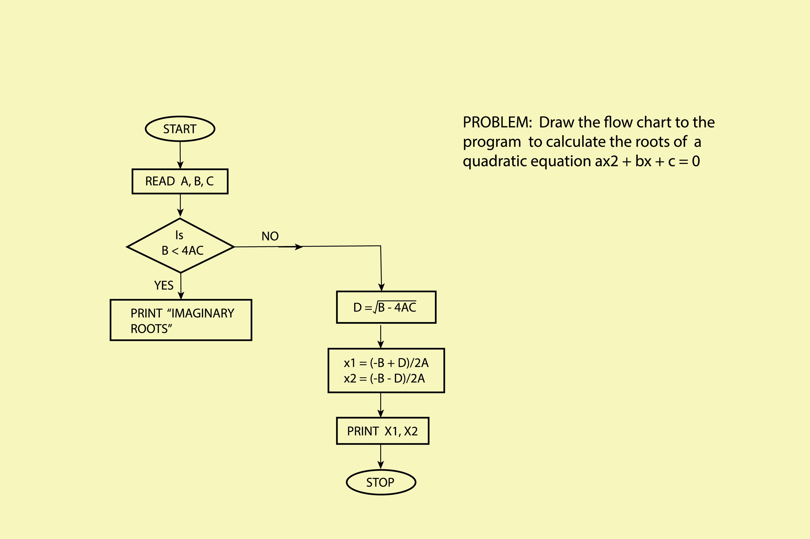
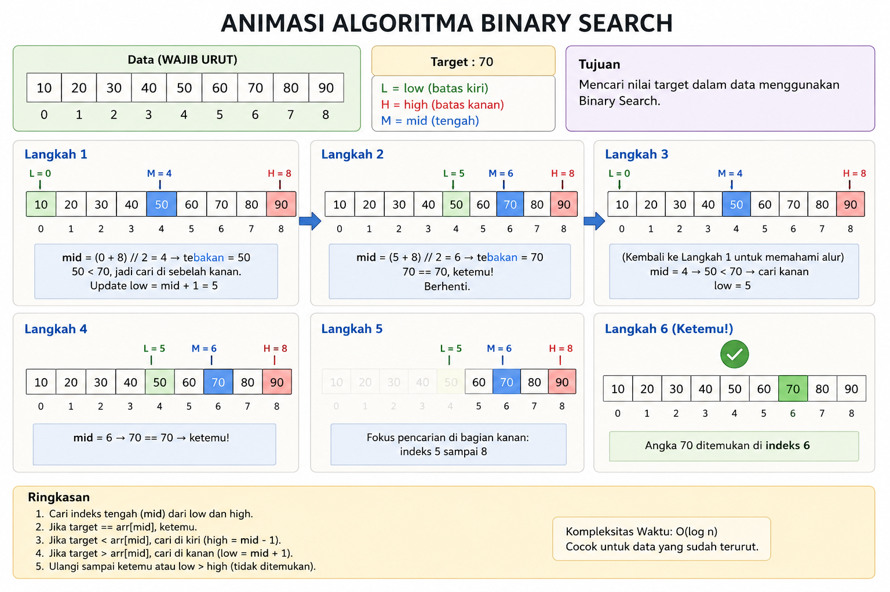

Linier Search
Linear Search adalah algoritma pencarian yang paling sederhana dan paling mendasar. Bayangkan kamu sedang mencari kunci di dalam sebuah laci yang berisi banyak barang secara acak; kamu akan mengecek satu per satu dari depan ke belakang sampai kunci itu ketemu. Itulah cara kerja Linear Search.
Bagaimana Cara Kerjanya?
- Logikanya sangat lurus (linear):
Mulai dari elemen pertama dalam daftar (indeks 0).
Bandingkan elemen tersebut dengan nilai yang kamu cari (target).
Jika sama, maka pencarian selesai dan posisi (indeks) ditemukan.
Jika tidak sama, pindah ke elemen berikutnya.
Ulangi terus sampai nilai ditemukan atau sampai semua elemen sudah dicek tapi tetap tidak ada.
Ilustrasi

Implementasi Python
def linear_search(arr, target):
# Loop melalui setiap elemen di dalam array
for i in range(len(arr)):
# Jika elemen ditemukan
if arr[i] == target:
return i # Mengembalikan indeks posisi elemen
# Jika sampai loop selesai target tidak ketemu
return -1
# Uji coba
kumpulan_angka = [10, 23, 45, 70, 11, 15]
target_cari = 70
hasil = linear_search(kumpulan_angka, target_cari)
if hasil != -1:
print(f"Angka {target_cari} ketemu di indeks ke-{hasil}")
else:
print("Angka tidak ditemukan dalam daftar")
Penjelasan :
- for i in range(len(arr)): Ini adalah mesin penggeraknya. Kita menyuruh program untuk "berjalan" menelusuri array dari ujung awal sampai akhir.
- if arr[i] == target: Di setiap langkah, kita bertanya: "Apakah kamu angka yang saya cari?".
- return i: Jika jawabannya "Ya", kita stop dan beri tahu di mana lokasinya.
- return -1: Jika seluruh array sudah dilewati dan kode ini jalan, artinya barangnya memang tidak ada. Angka -1 biasanya digunakan sebagai standar "tidak ditemukan".
Binary Search
Binary Search adalah algoritma pencarian yang jauh lebih cerdas dan cepat daripada Linear Search. Namun, ada satu syarat mutlak: datanya harus sudah terurut (sorted). Kalau Linear Search itu mengecek satu per satu, Binary Search menggunakan teknik "bagi dua" (seperti menebak halaman buku atau mencari kata di kamus).
Bagaimana Cara Kerjanya?
Bayangkan kamu mencari angka 70 dalam daftar yang sudah urut: [10, 20, 30, 40, 50, 60, 70, 80].
Cek Tengah: Lihat angka di paling tengah. Misal tengahnya adalah 40.
Bandingkan: Apakah 70 sama dengan 40? Tidak. Apakah 70 lebih besar? Ya!
Buang Setengah: Karena 70 pasti ada di sebelah kanan 40, kita buang semua angka dari 40 ke kiri. Kita tidak perlu mengeceknya lagi.
Ulangi: Sekarang kita hanya fokus pada bagian kanan [50, 60, 70, 80]. Cari lagi tengahnya, dan ulangi sampai ketemu.
Ilustrasi

Implementasi Python
def binary_search(arr, target):
low = 0
high = len(arr) - 1
while low <= high:
mid = (low + high) // 2 # Mencari indeks tengah
tebakan = arr[mid]
if tebakan == target:
return mid # Ketemu!
if tebakan > target:
high = mid - 1 # Target ada di sebelah kiri
else:
low = mid + 1 # Target ada di sebelah kanan
return -1 # Tidak ketemu
# Uji coba (Data WAJIB urut)
data = [10, 20, 30, 40, 50, 60, 70, 80, 90]
target = 70
hasil = binary_search(data, target)
if hasil != -1:
print(f"Angka {target} ditemukan di indeks {hasil}")
else:
print("Angka tidak ditemukan")
Penjelasan :
- low & high: Ini adalah pembatas area pencarian kita. Awalnya, areanya adalah seluruh array.
- mid = (low + high) // 2: Kita selalu mengambil titik tengah di setiap putaran.
- if tebakan > target: Jika angka tengah kegedean, kita geser pembatas high ke kiri (mid - 1)..
- else (low = mid + 1): Jika angka tengah kekecilan, kita geser pembatas low ke kanan.